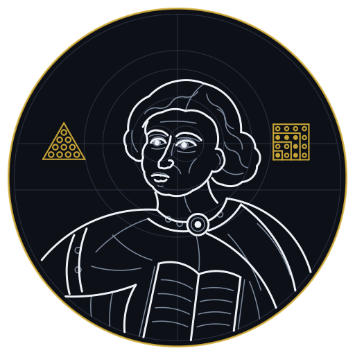

Nicomachus of Gerasa¶

Nicomachus of Gerasa (c. 60 – c. 120 CE) shaped a millennium of mathematical education by presenting arithmetic as the philosophy of number, ratio, and harmony—the foundation of the classical Quadrivium. This archive pairs Richard Hoche’s critical Greek text and Martin Luther D’Ooge’s English translation of the Introduction to Arithmetic with calibrated vector diagrams and exact SymPy demonstrations.
Works in This Archive¶
Hoche 1866 & D’Ooge 1926 · Books I–II · Boethius Parallel
Introduction to Arithmetic (*Ἀριθμητικὴ Εἰσαγωγή*) — Surveys the classification of even, odd, and perfect numbers (via the Sieve of Eratosthenes), the five species of inequality unfolded from equality, polygonal and solid figurate numbers, and the ten Neo-Pythagorean means culminating in the most perfect musical proportion.
Key Features¶
Four-Track Greek & English Codex
Read every chapter across synchronized English (D’Ooge), critical Greek (Hoche), Summary, and Notes tracks, collated with Boethius’s De Institutione Arithmetica.
Exact Symbolic Number Geometry
Explore executable SymPy models of the tree of equality, polygonal gnomon sums, cubes as sums of odd numbers, and the ten Neo-Pythagorean means in Symbolic Demos.
9 Calibrated Geometric Plates
Vector diagrams illustrate the Quadrivium tetrad, the sieve for perfect numbers, alpha-gnomons, heteromecic growth, and the musical cube proportion.
Reference & Project¶
Scholarly Apparatus
People — Nicomachus, Pythagoras, Plato, Eratosthenes, Boethius, Hoche, and D’Ooge
Concordance & Bibliography — Hoche–D’Ooge–Boethius mapping and critical editions
Glossary — Greek arithmetic, ratio, and harmonic terminology
About This Project
About — Scope, sources, and editorial methodology
Using This Edition — Reading guide, track switching, and diagram controls
Demos, Log, & Modules — Symbolic demos, journal, and API reference